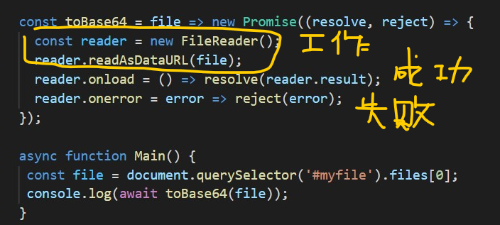

參考
看過的
<a download="My-FileName.txt" href="data:application/octet-stream,HELLO-WORLDDDDDDDD">Click here</a>
上面href產生的方式,利用函數encodeURIComponent()大概如下，其中的資料可以是其他標籤中的innerHTML或是innerText:
let a = document.createElement('a');
a.href = "data:application/octet-stream,"+
🏷 主要函數,不編碼base64
encodeURIComponent('"資料"');
a.download = 'myFile.json';
如果要指定base64，大概會是這樣:href="data:application/octet-stream,base64;.....。
a.href = 'data:text/attachment;base64,' + encodeURIComponent(document.getElementById(eid).innerHTML);
符號解釋: key value 之間用冒號(例如:data:text/attachment),如果還有其他選項(例如Base64)就使用不換行符號,分號(例如: data:text/attachment;base64),逗點表示開始另一個欄位資料,也就是編碼資料。
js-Base64,要不然就是btoa,atob(但是btoa()是處理1 byte的二進位資料,所以遇到UTF-8會有錯誤訊息),可以參考這裡。
- escape() 幾乎都編碼(各種符號包刮
/) - encodeURI() ,decodeURI() 我常用來對location上的亂碼用來解碼
encodeURIComponent() :通常是整個標籤內的innerText,innerHTML(因為會把
/編碼)window.btoa("xxxx") ✔ window.btoa("你好") ❌ decodeURI(encodeURI("你好")) ✔正確還原,但是這不是base64
💡所以我可以btoa(escape(某些東西))，也就是先轉ASCII然後編碼,然後再利用btoa。這個方式應該是最強大的,只是會產生很多字串。所以也可以考慮encodeURI,如下:
比較好用的方式
s=window.btoa(encodeURI("你好"))
decodeURI(window.atob(s))
注意不是下面這個順序:
s=window.btoa(encodeURI("你好"))
window.atob(decodeURI(s))
結果是 "%E4%BD%A0%E5%A5%BD"
snippet
github singlefile
-
async function downloadPageForeground(pageData) { if (pageData.filename && pageData.filename.length) { const link = document.createElement("a"); link.download = pageData.filename; link.href = URL.createObjectURL(new Blob([pageData.content], { type: "text/html" })); link.dispatchEvent(new MouseEvent("click")); URL.revokeObjectURL(link.href); } return new Promise(resolve => setTimeout(resolve, 1)); } function saveToClipboard(page) { const command = "copy"; document.addEventListener(command, listener); document.execCommand(command); document.removeEventListener(command, listener); function listener(event) { event.clipboardData.setData("text/html", page.content); event.clipboardData.setData("text/plain", page.content); event.preventDefault(); } }
檔案轉base64
- ref 簡單的想成簽一個契約,這個契約有兩個部分,一個是resolve,一個是reject
如圖,執行主要工作(這裡是readAsDataURL),如果成功(這裡是ONLOAD事件)就執行resolv,否則執行reject。
const toBase64 = file => new Promise((resolve, reject) => {
const reader = new FileReader();
reader.readAsDataURL(file);
reader.onload = () => resolve(reader.result);
reader.onerror = error => reject(error);
});
async function Main() {
const file = document.querySelector('#myfile').files[0];
console.log(await toBase64(file));
}
Main();
- 
- more promise
其他
比對字串,如果match 就傳回
fruit = ["lemon","banana","apple"]; fruit.filter( e=> e.match(/^(banana|lemon|mango|pineapple)$/))如果是forEach,不傳回任何東西,結果都是undefined。
紀錄
2021-08-12(12:28)
用到幾個函數
- unescape()
- encodeURIComponent()
function utf8_to_b64( str ) {
// 🏷 這裡有意思,因為encodeURIComponent會把/符號編碼,所以用了unescape
return window.btoa(unescape(encodeURIComponent( str )));
}
function extractElement(eid){
document.location =
'data:text/attachment;base64,' + // Notice the new "base64" bit!
utf8_to_b64(document.getElementById(eid).innerHTML);
//utf8_to_b64(document.documentElement.innerHTML); //To Download Entire Html Source
}
function packthis()
{
extractElement("content-wrapper");
}
2021-08-12(13:15)
產生下載連結的示範
function packthis()
{
a = document.createElement('a');
a.href = 'data:text/html;charset=utf-8,<html>' +
escape(document.documentElement.innerHTML) + '</html>';
a.innerHTML = 'click here';
document.body.appendChild(a);
a.download ="demo.html";
a.click();
}
但是下載的結果卻是產生一個JS,CSS都沒作用的網頁。❌不要。
✔打包某個URL中的附件
//這裡產生的是一個File物件。
async function getFileFromUrl(url, name, defaultType = 'image/jpeg'){
const response = await fetch(url);
const data = await response.blob();
return new File([data], name, {
type: response.headers.get('content-type') || defaultType,
});
}
async function packthis()
{
// `await` can only be used in an async body, but showing it here for simplicity.
const file = await getFileFromUrl('/~linchao/test/hugonote/pic2.jpg', 'example.jpg');
let url = URL.createObjectURL(file);
//🏷註解 上面,不要用createObjectURL() ,而是改成file.readAsDataURL(myBlob) 就是我要的
let link = document.createElement('a');
link.href = url;
link.download = file.name;
link.click();
link = null;
URL.revokeObjectURL(url);
}
但是這也不是我要的,我要直接內嵌在文件裡面。
⛳註解 作為示範,下面傳到console.log的字串,就是base64URI編碼,也就是href= console.log中的字串。
const file = await getFileFromUrl('/~linchao/test/hugonote/pic2.jpg', 'example.jpg'); reader = new FileReader() reader.onload = e=> console.log(reader.result); reader.readAsDataURL(file)
基本上這是我要的
const getBlobFromUrl = (myImageUrl) => {
return new Promise((resolve, reject) => {
let request = new XMLHttpRequest();
request.open('GET', myImageUrl, true);
request.responseType = 'blob';
request.onload = () => {
resolve(request.response);
};
request.onerror = reject;
request.send();
})
}
const getDataFromBlob = (myBlob) => {
return new Promise((resolve, reject) => {
let reader = new FileReader();
reader.onload = () => {
resolve(reader.result);//🏷 直接傳回base64字串
};
reader.onerror = reject;
reader.readAsDataURL(myBlob); //🏷 readAsDataURL 產生base64 編碼字串
})
}
const convertUrlToImageData = async (myImageUrl) => {
try {
let myBlob = await getBlobFromUrl(myImageUrl);
let myImageData = await getDataFromBlob(myBlob);
return myImageData;
} catch (err) {
console.log(err);
return null;
}
}
async function packthis()
{
let link = document.createElement('a');
document.body.appendChild(link);
//link.innerText="xxxxxxxxxxxxxxxxx";
url= await convertUrlToImageData('/~linchao/test/xxx.xlsx');
link.href = url;
link.download = "xx.xlsx";
link.click();
}
測試
點擊那個包裹按鈕